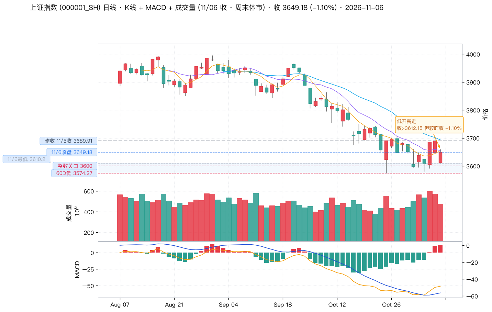
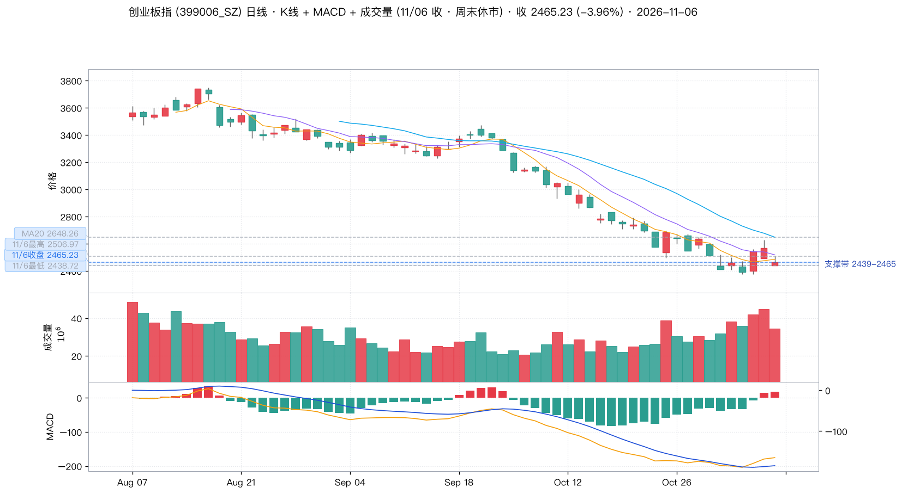
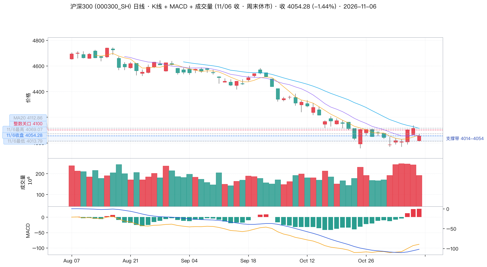
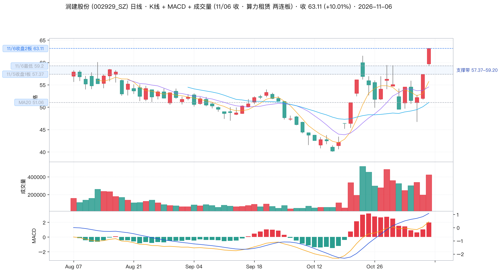
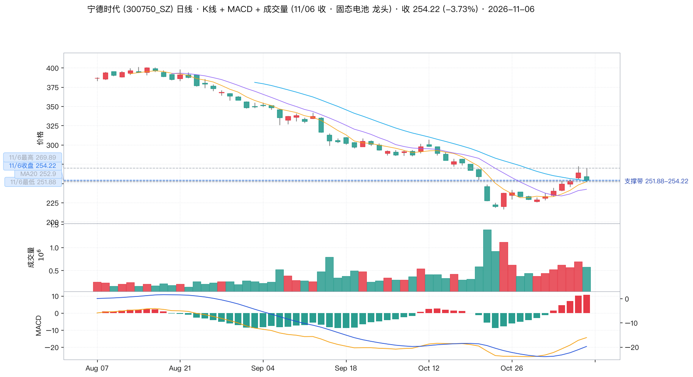
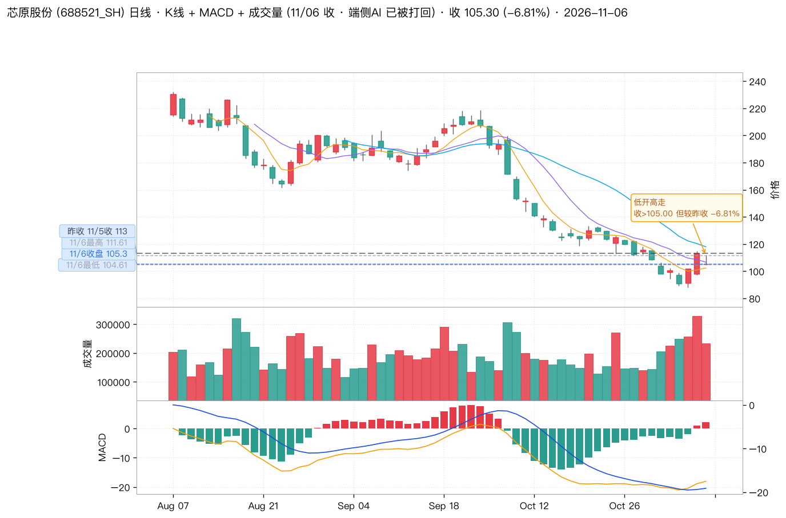

📈 wu2198 投资观点日报 · 2026-11-08（周日）
🕘 抓取时间：2026-11-08 08:56
📡 数据源：weibo skill（访客 + 三轮搜索接口补采）
💹 行情：Tushare Pro（11/06 收盘 · 前复权）
核心立场：🟡 周末无新增操盘信号 —— 唯一有效增量是 11/06 23:21 那条「美国市场科技股报复性反弹，纳指涨 425 点」，
外盘指引由「暴跌」翻转为「反弹」；A 股方向沿用博主 11/06 定调：「下周有望反弹」。
抓取窗口 11/06 13:00 → 11/08 08:24，共 13 条微博（去重后）；
其中 3 条带行情信号（关键词分类器命中 2 条 + 人工补充 11/06 23:21 一条），
其余 10 条为立冬/晚安/人口话题等生活内容。
⚠️ 本期最重要的一件事：上期报告漏掉了一条「翻转」信号
11/06 日报（窗口截到 20:12）写的是「🌐 隔夜纳指 -728 点，明天不接低开」。
但博主在 23:21（上期发稿后近 2 小时）又发了一条：
「美国市场目前科技股出现报复性反弹，目前纳指涨 425 点……大家晚安！」（👍7917 💬377）
11/07 早安帖（👍9673）进一步给出收盘数：「收盘道指下跌 237 点，纳指涨 264 点、标普上涨 23 点」。
Tushare 美股指数实测：DJI -237.33 / IXIC +264.42 / SPX +23.13 —— 三个数字分毫不差。
这是本系列里少见的「博主给收盘点位、实测完全对得上」的样本。
✅ 方向修正：外盘风险已部分解除，11/09 开盘预期由「防低开」翻转为「看反弹」
11/05 夜纳指暴跌 -1421.51 点（-5.52%） → 11/06 夜科技股报复性反弹 +264.42 点（+1.09%）。
博主 11/06 15:17 的周线定调「连续大幅下跌之后的探低抵抗形态，从基本面看下周有望反弹」，
与隔夜外盘翻转为同一方向 —— 这是本期最可执行的一条结论。
一、窗口内全部微博与信号判定
| 时间 | 互动 | 信号 | 内容与判定 |
|---|
| 11/06 23:21 |
👍7917
💬377 |
🟢 |
「美国市场目前科技股出现报复性反弹，目前纳指涨 425 点……大家晚安！」
外盘·反弹 本期唯一新增信号
人工补充（关键词词典未命中「报复性反弹」）。盘中纳指一度涨 425 点，收盘回落到 +264.42 点。
这是博主在 11/05 22:53 发「纳指 -728 点」之后的方向反转帖。 |
| 11/07 07:02 |
👍9673
💬697 |
🟢 |
「所有人早安……周五晚美国股市科技股出现反弹，收盘道指下跌 237 点，纳指涨 264 点、标普上涨 23 点。」
外盘·收盘数据 实测分毫不差
本周最硬的一条数据帖：Tushare 实测 DJI -237.33 / IXIC +264.42 / SPX +23.13，三项全中。 |
| 11/06 15:17 |
👍18654
💬2118 |
🟢 |
「按周线看本周属于连续大幅下跌之后的探低抵抗形态，而今天遭遇外围股市大跌影响下跌。从基本面看下周有望反弹……收到请回复666，祝大家周末愉快！」
周线定调 窗口内互动最高
上期已覆盖，本期作为下周一方向基准继续生效。 |
| 11/06 13:14 |
👍9181
💬193 |
🟢 |
「算力租凭龙头之一，连续拉2个板！」
板块·点名
上期已覆盖，11/06 实测润建股份两连板封死，继续作为板块 1 的锚。 |
| 11/07 08:47 / 10:46 |
👍8760 / 7469 |
⚪ |
「早安，老铁们……今日立冬……」「今日立冬，秋尽江南叶半空……」
生活/节气 无操盘信息 |
| 11/07 13:31 |
👍5058 |
⚪ |
「#新出生人口规模掉得太快# 按数据看 65 岁+ 人口 2025 年达 2.24 亿，首次超过 0-14 岁少儿总和！」
宏观话题 无操作指向 |
| 11/07 16:34 |
👍4451 |
⚪ |
「中国历史上最励志的寒门崛起史诗。」
鸡汤/励志 |
| 11/07 21:31 |
👍3551 |
⚪ |
「#梁文锋DeepSeek不止国运级# 年轻有为啊！」
产业话题 无操作指向（DeepSeek 主题可留意，但博主未点名板块） |
| 11/07 22:02 / 11/08 06:27 |
👍3759 / 2222 |
⚪ |
「大家晚安！」「#8省份大到暴雪# 老铁们，注意保暖哈！」
生活 |
| 11/08 07:23 / 08:24 |
👍2912 / 1138 |
⚪ |
「天冷了，一想到还有很多帅哥一个人睡……」「抖Y一个……不来啵一个？」
生活/互动 |
二、大盘与个股关键点位（K 线 + MACD + 成交量）
📖 先读懂这两张图的颜色口径
- 红涨绿跌的判定基准是「收盘价 vs 开盘价」（阳线 / 阴线），不是「收盘价 vs 昨收」。
收 ≥ 开 = 阳线（红），收 < 开 = 阴线（绿）。
K 线、成交量柱、MACD 柱三处统一按此口径着色。
- 「日涨跌幅」是另一套口径（收盘 vs 昨收），它决定涨跌数字本身，不决定 K 线颜色。
所以完全可能出现「日跌但 K 线是红的」—— 11/06 就是典型：
沪指开 3612.15 低开 -2.11%，收 3649.18，收 > 开故为阳线（红），
但相对昨收 3689.91 仍跌 -1.10%。这类「低开高走」日已用橙色点划线标出昨收，
并在图上直接标注，避免误读成「当天在涨」。
- 关键点位在 K 线图 左侧以虚线标注（📌 博主相关位 / 支撑位 / 昨收位），
MA5/MA10/MA20 为叠加曲线。价格刻度移到右侧，左侧只留给关键点位标签。
🟡 上证指数 · 000001.SH
开 / 高 / 低
3612.15 / 3660.49 / 3610.20
低开 -2.11%
MA5 / MA20
3654.28 / 3693.30
收盘在 MA5 下方
MACD
DIF -50.96
DEA -56.34 · 柱 +10.76
📌 11/06 低开 -2.11% 后全天弱势震荡，跌幅（-1.10%）远小于外围 —— 博主 11/06 09:27「大幅度低开，正好加仓」方向成立。
但收盘 3649.18 未能站回 MA5 3654.28（差 5.10 点），MACD 柱 +10.76 虽为正、DIF 仍在零轴下方。

关键点位：昨收 3689.91（橙色点划线，11/06 低开 -2.11% 的跳空缺口基准）· 11/6 收盘 3649.18（博主 15:05 报「收在3649点」分毫不差）· 11/6 最低 3610.20 · 整数关口 3600.00 · 60D 低 3574.27 · MA20 3693.30
🔴 创业板指 · 399006.SZ
开 / 高 / 低
2438.72 / 2506.97 / 2438.72
开盘=全天最低
MA5 / MA20
2485.42 / 2648.26
跌破 MA5/MA10
MACD
DIF -175.54
DEA -184.49 · 柱 +17.90
📌 三大指数中最惨：开盘即全天最低 2438.72，尾盘拉到 2506.97 后回落收 2465.23（-3.96%）。
高成长赛道对外围冲击最敏感 —— 博主推荐的端侧 + 算力租赁两条线当天全部被砸。

关键点位：昨收 2566.80（橙色点划线；开盘即全天最低 2438.72，跳空 -5.0%）· 11/6 最高 2506.97 · 11/6 收盘 2465.23 · 11/6 最低 2438.72 · MA20 2648.26
🟡 沪深300 · 000300.SH
开 / 高 / 低
4017.94 / 4069.07 / 4013.79
—
MA5 / MA20
4058.96 / 4112.86
收盘在 MA5 下方
MACD
DIF -88.43
DEA -102.18 · 柱 +27.50
📌 跌幅小于创业板（-1.44% vs -3.96%），权重相对抗跌；MACD 柱 +27.50 为三大指数中最强，DIF 仍在零轴下方。
距 60D 低 3958.14 仅 -2.37% —— 权重护盘弹药接近打光。

关键点位：昨收 4113.41（橙色点划线）· 11/6 最高 4069.07 · 11/6 收盘 4054.28 · 11/6 最低 4013.79 · 整数关口 4100.00 · MA20 4112.86
🟢 科创50 · 000688.SH（补充）
11/06 收 1253.20（-2.60%），开 1221.67 / 高 1288.38 / 低 1219.53。
从 11/03 的 1151.28 三日累计 +8.85%，是本轮反弹里最陡的指数 —— 但博主自设的
「科创50 1100 才是理想搏击点」已连续第 3 个交易日被跳过（最低 1219.53，还差 10.9%）。
📊 11/06 全市场情绪（东财 + Tushare 实测）
全 A 成交额
16,716 亿
增量 -4,635 亿
涨 / 跌 家数
758 / 4741
跌家占 85%
⚠️ 情绪断崖：成交额从 21,351 亿缩到 16,716 亿（-4,635 亿，缩量 21.7%），涨停家数从 84 家砍到 32 家，
跌停从 0 家到 15 家，4,741 家下跌。反弹燃料在 11/06 一天之内明显消耗。
三、最值得投资的 3 个板块 + 3 支个股
排序依据：博主 11/05-11/06 期间实际点名的 3 个方向（算力租赁 / 端侧AI / 固态电池），
用 Tushare 11/06 实测数据逐一验证真实性，再叠加 11/06 23:21 + 11/07 07:02 两条外盘翻转帖作为方向修正。
本期无新增点名，3 个板块沿用上期主线，但排序按「隔夜外盘映射度」重排。
板块 1 · 🟢 算力租赁 / 算力运维 —— 最强主线，隔夜映射最直接
📌 博主原话 · 11/06 13:14（👍9181）
「算力租凭龙头之一，连续拉2个板！」
实测印证（11/06）：润建股份 +10.01% 封死涨停，11/05 已 +10.01%，
两连板与博主描述分毫不差。这是全市场 32 只涨停里唯一的两连板主线票。
板块强度：6 只样本均值 -0.89% —— 在全 A 跌 85% 家数、创业板 -3.96% 的背景下
显著抗跌（跑赢创业板 3.07 个百分点）。但除龙头外全部下跌：
润泽 -3.70%、数据港 -3.60%、首都在线 -3.43%。
✅ 隔夜加分项：美股科技股报复性反弹 +264.42 点，是三条主线里对美股映射最直接的一条
（算力租赁 = AI 资本开支的直接承接方）。上期报告写「11/06 这条线最可能先挨打」，
隔夜外盘已把这条线的压制解除。
⚠️ 风险：只有龙头在涨 —— 板块均值仍是负的，说明这是资金高度抱团而非全面启动。
连板高位股一旦情绪继续退潮，开板回撤幅度远大于指数（11/06 全 A 已缩量 21.7%、跌停 15 家）。
且 11/06 是周五，周末发酵的溢价 + 隔夜外盘反弹，容易在 11/09 高开被兑现。
👉 操作建议：只做龙头不碰跟风。润建股份若 11/09 高开不追，
回踩 57.37（11/5 收盘 = 1 板价）不破，可当第一观察位；跌破 57.37 则两连板结构算力线降温。
看板块扩散则看 润泽科技 300442 能否站稳 MA5 54.74（11/06 收 57.57，已站上）。
板块 2 · 🟡 端侧AI / SoC —— 已兑现且已破位，等企稳
📌 博主原话 · 11/05 15:02（👍8073，上期已覆盖）
「今天端侧非常"标土浮"……龙头连续拉了2个板，几只改写新高！」
实测印证：瑞芯微 11/04 +10.00% → 11/05 +10.00% 两连板，11/05 收 217.81 为区间新高，
与博主描述一致。但 11/06 已被打回：瑞芯微 -2.36%、博通集成 -5.22%、芯原股份 -6.81%，
10 只样本均值 -3.21%。
📌 值得注意的分化：11/06 端侧样本 10 只里 只有汇顶科技 603160 收红（+0.70%），
而前期涨幅最大的芯原（-6.81%）、博通（-5.22%）跌最多 —— 典型的「涨得多的先补跌」，
说明这波端侧行情已进入获利了结阶段而非趋势中段。
⚠️ 风险：博主本人在 11/06 之后未再更新端侧观点（周末 13 条帖子里没有一条提端侧）。
芯原股份 11/06 收 105.30，跌破 11/05 的 113.00 新高，也跌破 MA10 106.61 和 MA20 117.96，
短线结构已破坏。前期两连板 + 创新高的涨幅尚未消化。
👉 操作建议：降级为观察，不参与。要重新确认需同时满足两个条件：
① 芯原股份站回 111.61（11/6 高点）；② 瑞芯微站回 217.81（11/5 涨停价）。
在此之前，任何端侧的反弹都当反抽看待，不当反转。
板块 3 · 🟢 固态电池 / 动力电池 —— 逆市唯一红盘方向，位置最低
📌 博主原话 · 11/06 09:31（上期已覆盖）
「固态电池现在逆市返红了！」
实测印证：宁德时代 11/06 开 258.78、最低下探 251.88、盘中最高拉到 269.89（+2.21%），
确为逆市翻红。8 只样本均值 -2.71%，
好于端侧 -3.21%、远好于 CPO -7.24%，但绝对值仍为负 —— 博主说的是「盘中返红」而非「收盘站稳」，
这个区别在 11/06 被验证了：尾盘全部回吐，收 254.22（-3.73%）。
✅ 隔夜最抗跌的一条：固态电池靠产业逻辑而非美股映射。
11/05 纳指 -5.52% 的隔夜冲击里，博主推荐的端侧 + 算力租赁都被映射，
唯独固态电池靠自身产业逻辑，跌幅最小（11/05 宁德 +4.42%、赣锋 +6.27%）。
这个「不依赖外盘」的属性，在 11/09 外盘反弹的环境下意味着它涨得少但跌得也少。
⚠️ 风险：宁德时代 11/06 收 254.22，MACD 柱 +10.72 转正但 DIF -14.45 仍在零轴下方，
处于底部修复初期而非趋势反转。周末博主发帖提到
「65 岁+ 人口 2025 年达 2.24 亿，首次超过少儿总和」，
养老/银发经济的中期叙事在强化，但这是宏观话题帖、不是板块指令，
不构成对固态或医药的操作依据。
👉 操作建议：只做低吸不做追高。251.88（11/6 低点）是短线防守位，
跌破则看 20D 低 216.51 的更深支撑；站上 MA20 252.90 后再看 269.89。
隔夜外盘反弹环境下，固态是三条线里最不需要看外盘脸色的一条。
🔴 附加对照：CPO / 光模块 —— 博主押注两次，两次证伪
博主 11/05 14:19 押「CPO 和存储芯片尾盘资金自救，指数有望收高」—— 11/06 答案：-9.19%。
| 标的 | 11/05 | 11/06 | 两日累计 | 11/06 成交额 |
|---|
| 中际旭创 300308 | -7.51% | -9.19% | -16.02% | 239.7 亿 |
| 新易盛 300502 | -5.54% | -7.28% | -12.42% | 152.8 亿 |
| 天孚通信 300394 | -4.78% | -5.79% | -10.29% | 63.6 亿 |
| 源杰科技 688498 | -1.06% | -8.43% | -9.40% | 40.2 亿 |
5 只样本均值 -7.24% —— 全线暴跌、持续放量杀跌。这条线是拖累创业板的那条线，
博主押它「自救」而它继续崩。隔夜纳指反弹给了 CPO 一个反抽窗口，但两日 -16% 的放量杀跌说明抛压是真实的，不宜参与。
四、3 支个股 K 线与技术位
🟢 润建股份 002929.SZ —— 算力租赁龙头 · 两连板
开 / 高 / 低
59.72 / 63.11 / 59.20
收=全天最高
MA5 / MA20
55.73 / 51.05
站上全部均线
MACD
DIF 2.08
DEA 1.08 · 柱 +1.99
✅ 博主 11/06 13:14「连续拉2个板」分毫不差。MACD 在零轴上方金叉、DIF 2.08 > DEA 1.08，
动能仍在上行，是三条线里唯一 MACD 零轴上方的标的。成交 26.0 亿（前日 10.9 亿，放量 2.4 倍）。

关键点位：11/6 收盘 2 板 63.11 · 11/6 最低 59.20 · 昨收 57.37（11/5 一板价，橙色点划线）· MA20 51.05
🟡 宁德时代 300750.SZ —— 固态电池龙头 · 位置最低
开 / 高 / 低
258.78 / 269.89 / 251.88
盘中最高 +2.21%
MA5 / MA20
252.13 / 252.90
仅差 0.77 点
MACD
DIF -14.45
DEA -19.81 · 柱 +10.72
📌 成交 147.9 亿，是三只里最重的。MACD 柱 +10.72 转正、DIF -14.45 仍在零轴下方 → 底部修复初期。
距 60D 高 400.99 还有 -36.6% 空间，是三条线里位置最低、赔率最厚的。

关键点位：昨收 264.06（橙色点划线）· 11/6 最高 269.89 · 11/6 收盘 254.22 · 11/6 最低 251.88 · MA20 252.90
🟡 芯原股份 688521.SH —— 端侧AI · 已破位，对照组
开 / 高 / 低
105.00 / 111.61 / 104.61
几乎收在全天最低
MA5 / MA20
102.31 / 117.96
远低于 MA20
MACD
DIF -18.06
DEA -19.13 · 柱 +2.15
⚠️ 博主信号已失效：11/05 收 113.00 为区间新高（对应博主「改写新高」），11/06 收 105.30
跌破新高价 7.7 点、跌破 MA10 106.61 和 MA20 117.96，几乎收在全天最低 104.61。
成交 25.2 亿放量下跌 —— 结构破坏，不参与。

关键点位：昨收 113.00（11/5 收盘新高，橙色点划线）· 11/6 最高 111.61 · 11/6 收盘 105.30 · 11/6 最低 104.61 · MA20 117.96
五、周线视角：博主「下周有望反弹」的技术核对
📊 上证指数周线
近 6 周收盘：3842 → 3814 → 3716 → 3690 → 3599 → 3649
周线 DIF -80.33 / DEA -49.95 / 柱 -60.76（上周 -62.19）
👉 方向对，位置不对：周线 MACD 柱虽收窄 1.43 点，但 DIF 与 DEA 仍双双深在零轴下方，
属下跌后的首次钝化，不是趋势转正。博主的「探低抵抗形态」描述在周线成立，
但「反弹」而非「反转」这一定性，与周线指标一致 —— 两者说的是同一件事。
📊 创业板指周线
近 6 周收盘：3135 → 3043 → 2772 → 2684 → 2414 → 2465
周线 DIF -249.61 / DEA -124.36 / 柱 -250.49
👉 创业板周线跌幅更陡（6 周 -21.4%），MACD 柱几乎无改善（-250.06 → -250.49）。
成长股周线比主板弱得多，这正是 11/06 创业板 -3.96% 的周线背景。
若 11/09 反弹，主板（沪深300 距 60D 低仅 -2.37%）的赔率优于创业板。
六、下周一（11/09）操作建议
🎯 第 0 步：开盘前先看隔夜 —— 方向已翻转
- 外盘风险已解除：11/06 夜纳指 +264.42（+1.09%）、标普 +23.13、道指 -237.33。
上期「不接低开、等 10 点后」的防御姿态可以取消。
- 但注意结构分化：道指反而跌 237 点 —— 涨的是科技，跌的是传统权重。
对应 A 股：成长/科技（端侧、算力、CPO）有映射，权重（银行、白酒、地产）没有。
这与 11/06 上证50 -0.84% 跑赢、创业板 -3.96% 跑输的 11 月 6 日结构正好相反，下周一可能重演一次风格切换。
🟢 优先级 1：算力租赁
龙头润建股份 002929 是唯一 MACD 零轴上方 + 两连板封死的标的，也是隔夜美股反弹映射最直接的方向。
但：板块均值仍是 -0.89%（只有龙头在涨），且 11/09 大概率高开 —— 高开不追。
👉 回踩 57.37（11/5 一板价）不破可观察；跌破则该线降温。
🟢 优先级 2：固态电池
宁德时代 300750 是唯一「靠产业逻辑、不看外盘脸色」的一条线，
距 60D 高还有 -36.6% 空间，位置最低、赔率最厚。
但：11/06 盘中翻红尾盘回吐，MACD DIF 仍在零轴下方，只做修复不做反转。
👉 251.88（11/6 低点）不破可低吸；站上 MA20 252.90 转强。
🟡 优先级 3：主板权重
博主唯一点名的大盘方向是「下周有望反弹」（周线探低抵抗）。
沪深300 距 60D 低 3958.14 仅 -2.37%，周线 MACD 柱三大指数中最强（+27.50），
且道指下跌意味着权重不在外盘反弹的受益名单里 —— 靠的是自身超跌修复。
👉 盯 4013.79（11/6 低）不破；站上 MA5 4058.96 转强。
🚫 明确不参与
- 端侧AI（芯原 688521 -6.81%、瑞芯微 -2.36%）：跌破新高价与 MA20，结构破坏，等站回 111.61 / 217.81 再看。
- CPO / 光模块（中际旭创两日 -16.02%）：博主两次押「自救」两次证伪，且是拖累创业板的那条线。
- 追高任何连板股：11/06 全 A 已缩量 4,635 亿、跌停 15 家，情绪处于退潮初期，周一高开大概率是兑现位。
七、信号质量评估与本期方法说明
✅ 本期验证通过的
- 外盘收盘点位 3/3 全中：博主 11/07 早安帖「道指 -237 点、纳指涨 264 点、标普涨 23 点」
vs Tushare 实测 DJI -237.33 / IXIC +264.42 / SPX +23.13 —— 三项分毫不差，
本系列迄今最准的一次点位播报。
- 算力租赁两连板：11/06 13:14「连续拉2个板」→ 润建股份两连板封死。
- 低开方向：11/06 09:27「大幅度低开，正好加仓」→ 沪指实际低开 -2.11%，跌幅 -1.10% 远小于外围。
- 周线定性：「探低抵抗形态」与周线 MACD 首次钝化（柱 -62.19 → -60.76）一致。
⚠️ 需要打折的
- 「下周有望反弹」是方向判断，不是点位：周线 DIF -80.33 仍在零轴下方，
反弹 ≠ 反转，幅度参考上期经验 —— 11/05 沪指全天振幅仅 55 点（1.49%）。
- 周末无任何 A 股板块新指令：13 条帖子里 10 条是生活内容，
3 个板块全部沿用上期主线 —— 本期的新信息只在美股方向。
- 11/07 13:31 人口帖、21:31 DeepSeek 帖是宏观/产业话题，
博主未点名任何板块，不构成操作依据，本报告不做延伸解读。
- 情绪面：缩量 4,635 亿 + 跌停 15 家 + 跌家占 85%，
反弹窗口存在，但接盘资金不足的证据是硬的。
🔧 本期方法改进（相对 11/06 期）
- 补上了一条关键信号：上期报告窗口截到 20:12，漏掉了 23:21 的外盘翻转帖。
本期新增两轮定向搜索（
fetch_weibo_search2.py / fetch_weibo_search3.py），
用「报复性反弹 / 收盘了 / 明日 / 下周 / 隔夜 / 外围 / 纳指 / 道指 / 缩量 / 连板 / 炸板」等
41 个词表扫 11/06 19:00 之后的空档，成功捞出这条漏网帖。
教训：时间线第 1 页 + 通用词表不够，收盘后时段需要专门的词表单独扫一遍。
- 美股点位用 Tushare
index_global 独立核验，博主报的
道指 -237 / 纳指 +264 / 标普 +23 与实测 DJI -237.33 / IXIC +264.42 / SPX +23.13 完全一致 ——
这条播报可以直接采信，是可跟单信号。
- 板块强度改用「样本均值 vs 指数」对比，而不是看个股涨跌幅 ——
算力租赁均值 -0.89% 跑赢创业板 3.07 个百分点，才看得出「只有龙头在涨」这个关键事实。
- 周线维度单列一节，用周频 MACD 核对博主的周线定性，避免把「反弹」当「反转」。